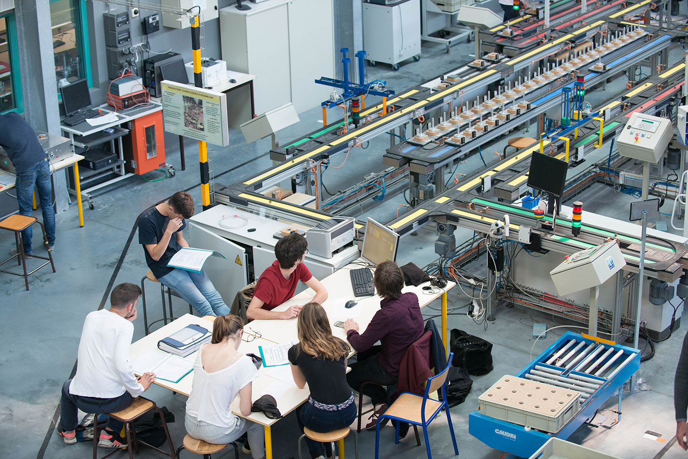

The University of Technology of Montreuil was created in 1998, it offers many training courses,
allowing its students to easily continue their studies. In addition, this IUT also tries to respect
the environment as best as possible by automatically shutting down the computers at 19:40. This
saves more than 2,600 kWh per night. The 4 different B.U.T that are there
can be done alternately (Option to be anticipated as soon as the return).
In a few figures:
13 degrees: B.U.T/D.U.T and professional license
38 teachers: teachers-researchers and second-level teachers
732 computers of which 565 for teaching purposes
50 classrooms with video projection equipment and/or computer stations
1 Modelled plant with robotics hardware and industrial management software
Finally 4 associations!!!
To date the I.U.T has 4 Speciality and 13 trainings:
B.U.T in Administrative and Commercial Management of Organizations (GACO):
Proposed Pathways:
Responsible project and organizational management
Management of support functions: this path is only offered within the
apprenticeship contract in partnership with Sup'Expertise Paris.
Sales management and omni-channel marketing: this course is offered only
in learning.
referring :
This training takes place in 3 years and therefore allows to obtain a diploma bac +3, se
runs with 22 to 26 weeks of training.
The alternation is possible from the 1st year and is specified during the registration.
This training takes place in 3 years and therefore allows to obtain a diploma bac +3, se
runs with 22 to 26 weeks of training.
The alternation is possible from the 2nd year and is specified during registration.
B.U.T in Industrial Logistics and Organization Quality (QLIO):
Proposed Pathways:
Communication Officer/ Web Communication Officer
Global logistics chain management

referring :
This training takes place in 3 years and therefore allows to obtain a diploma bac +3, se
runs with 22 to 26 weeks of training.
The alternation is possible from the 2nd year and is specified during registration.
B.U.T in Information and Communication (INFOCOM):
Proposed Pathways:
Communication of organizations
referring :
This training takes place in 3 years and allows to obtain a diploma bac +3, takes place
with 22 to 26 weeks of training.
The alternation is possible from the 2nd year and is specified during registration.
Professional Degree in Logistics Process Management:
This training takes place in 1 year and therefore allows to obtain a baccalaureate degree
+5, with
2 days of training and 3 days in a company. A period of
several weeks in a company completes this training.
Professional Licence Communication Professions: Project Manager Communication:
This training takes place in 1 year and therefore allows to obtain a baccalaureate degree
+5, with
7 days in training and 7 days in a company.
Professional License Computer Science Professions:
This training takes place in 1 year and therefore allows to obtain a baccalaureate degree
+5, with
2 days in training and 3 days in company.
Professional License E-Commerce and Digital Marketing:
This training takes place in 1 year and therefore allows to obtain a baccalaureate degree
+5, with
a two-week alternation in training and four weeks in a company.
Professional license Commerce and distribution:
This training takes place in 1 year and therefore allows to obtain a baccalaureate degree
+5, with
a two-week alternation in training and three weeks in a company.